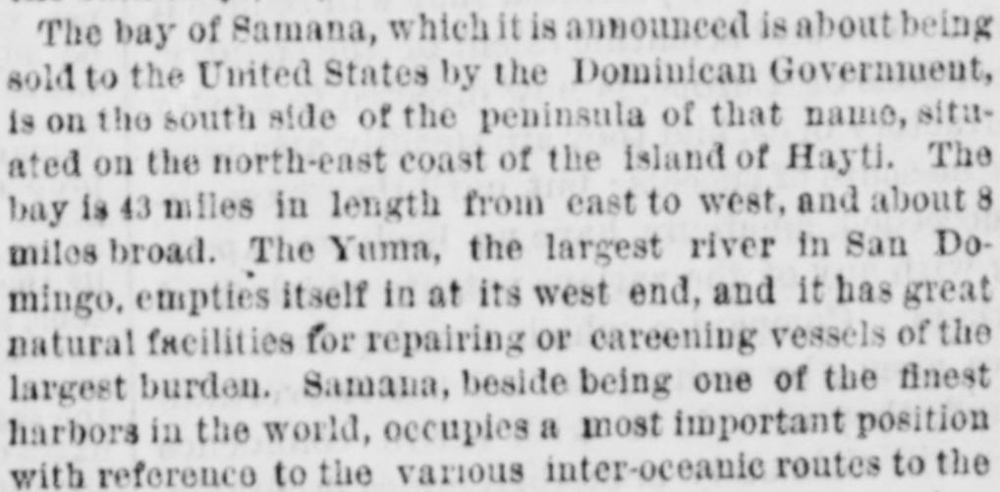
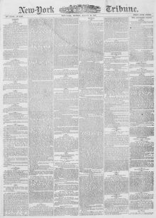

The Yuma, the largest river in San Domingo, empties itselfEl Yuma, el río más grande de Santo Domingo, desemboca
New-York Tribune. New York [N.Y.], August 26, 1867. Page 1. Published by New York Tribune. A daily newspaper, 1866–1924.New-York Tribune. New York [N.Y.], 26 de agosto de 1867. Página 1. Publicado por New York Tribune. Periódico diario, 1866–1924. View the originalVer el original


See the full pageVer la página completaNew-York Tribune August 26, 186726 de agosto de 1867
The New-York Tribune reported that the bay and a portion of the peninsula of Samaná, located on the northeast coast of the island of Hayti, possess great natural facilities for repairing vessels and occupy an important strategic position relative to inter-oceanic routes. The article stated that possession of Samaná would be of incalculable value to the United States for commercial purposes and as a naval station, comparing its potential importance to that of Gibraltar. Additionally, the excerpt described the area as having a fertile soil, a salubrious tropical climate, and being reachable from New York in four days by steamer.El New-York Tribune informó que la bahía y una parte de la península de Samaná, situadas en la costa nororiental de la isla de Santo Domingo, ofrecen excelentes condiciones naturales para el carenado y reparación de buques y ocupan una posición estratégica primordial respecto a las rutas interoceánicas. El artículo aseveró que la posesión de Samaná revestiría un valor inestimable para los Estados Unidos con fines mercantiles y como base naval, comparando su trascendencia potencial con la de Gibraltar. Además, el extracto describió la zona dotada de un suelo feraz y un saludable clima tropical, accesible desde Nueva York en cuatro singladuras por vapor.
[Editor's note: the paper writes of the east as part of Hayti. From 1822 to 1844 the Dominican Republic was held by Haitian military occupation, against its people's will; it restored its independence on February 27, 1844.][Nota del editor: el periódico habla del este como parte de Haití. De 1822 a 1844 la República Dominicana estuvo bajo ocupación militar haitiana, contra la voluntad de su pueblo; restauró su independencia el 27 de febrero de 1844.]